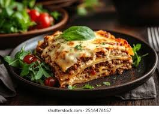

HOME
Lasagna

Description: Lasagna is an Italian baked dish made of pasta sheets layered with meat or vegetable sauce, cheese, and sometimes creamy béchamel.
It’s cooked in the oven until soft, cheesy, and golden on top.
- Lasagna pasta sheets
- Ground beef or chicken (or vegetables for veg option)
- Onion & garlic
- Tomato sauce or crushed tomatoes
- Olive oil
- Cheese (mozzarella, ricotta, parmesan)
- Salt, pepper, oregano, basil
- (Optional) White sauce / béchamel
STEPS
- Cook the pasta : Boil lasagna sheets until soft, then drain.
- Make the meat/veg sauce : Fry onion & garlic in olive oil, add ground meat/veggies, cook, then pour in tomato sauce + spices. Simmer.
- Prepare cheese mixture : Mix ricotta (or cottage cheese) with a little salt, pepper, and herbs.
- Layer in a baking dish :
Spread a little sauce on the bottom,
Place pasta sheet,
Add meat/veg sauce,
Add cheese,
Repeat layers until full.
- Top layer : Pasta sheet + sauce + lots of mozzarella & parmesan.
- Bake : Put in oven at 180°C (350°F) for 30–40 minutes until golden and bubbly.
- Rest & serve : Let it cool for 10 minutes, then cut into squares and serve hot.